Keith Weston
Design leader with 15 years of experience specializing in design systems, platform UX, and native mobile apps across gaming, healthcare, logistics, and HR tech.
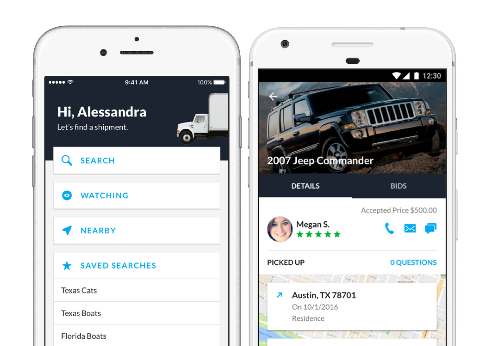
uShip
- Senior Mobile UX Designer (2016 – 2017)
Mobile app redesign
When I joined uShip in summer 2016, the company was undergoing a major brand update. The web was about halfway redesigned, and I completed the mobile app redesign. Most of the rebranding was a visual update, but we did make some interaction improvements as well.
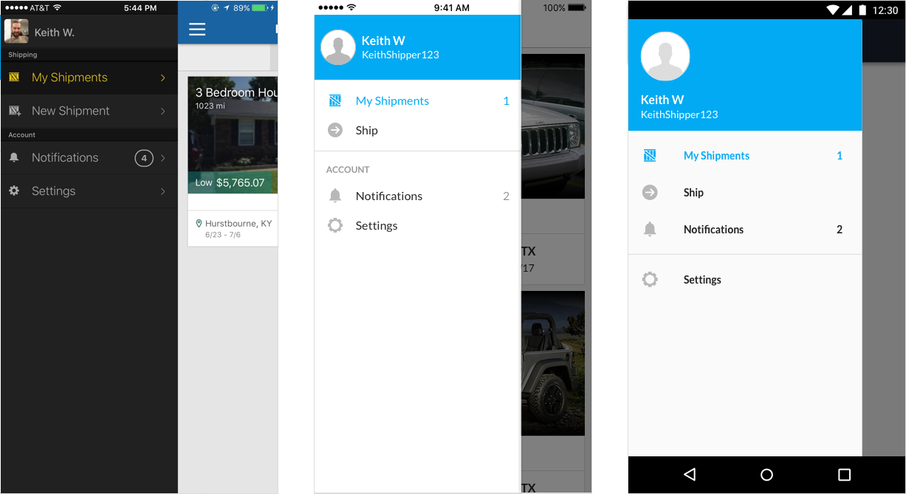
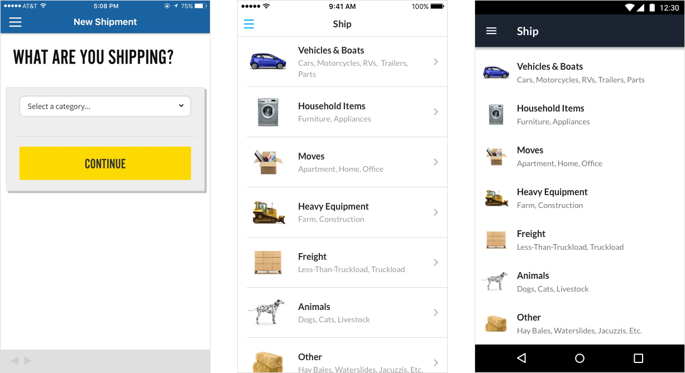
Tab bar navigation
Following the visual rebranding to match the new company style, we saw a possible improvement to the mobile app navigation with a tab bar. Tab Bar navigation was becoming the preferred method of mobile navigation over the drawer navigation for many reasons, such as higher engagement and thumb reach. We saw an average of 5%+ user engagement with sections previously hidden.
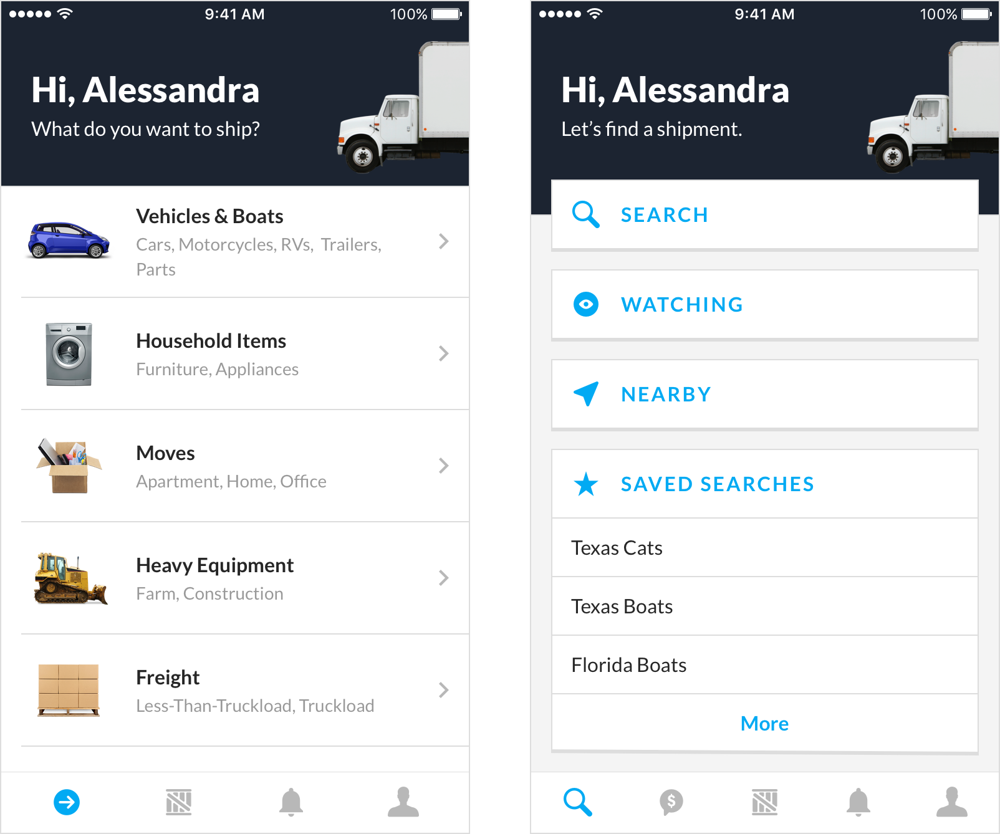
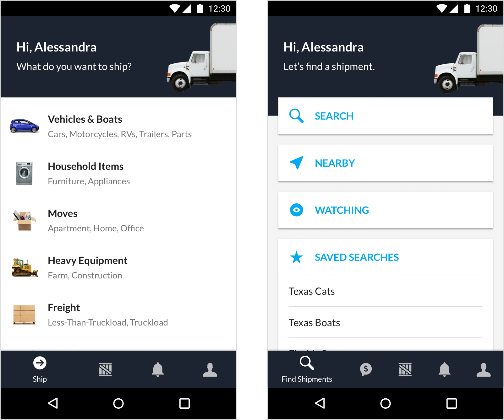
Edit shipments
The ability to edit a shipment did not exist in the product, leading to a high number of customer service calls. Although it sounds simple, there were many different scenarios that had to be considered for editing, such as price changes after a booking. This project was also completed on the web at the same time, so product coordination with the web team was critical.
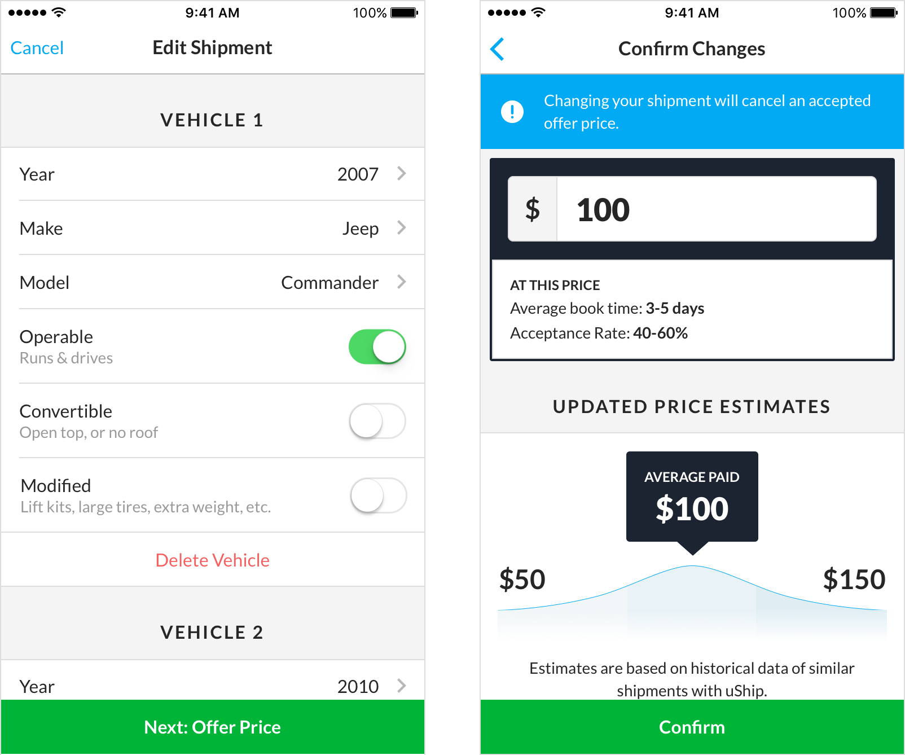
User feedback
Getting carriers into our physical office for research and usability testing was difficult, as the carriers were often on the road. We still greatly desired this feedback, so we built it into the app. After this feature was released, the team received an average of 10 emails a week with feedback.
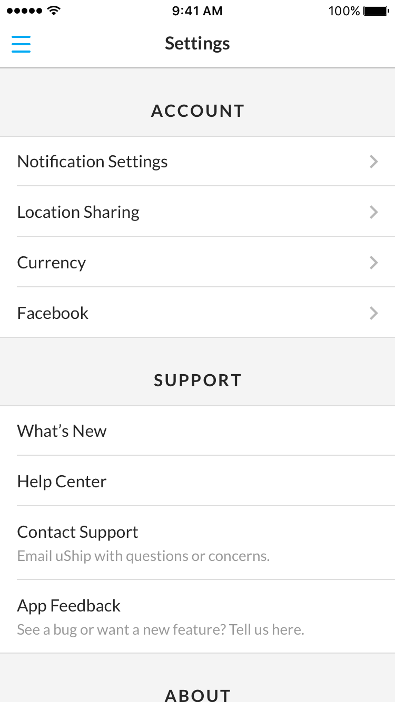
Keeping up with mobile technology
Apple and Android make updates frequently, and ensuring that an app stays current is crucial. One example of this was Apple's introduction of device permissions dialogs. At first our users found these jarring as they were learning this new paradigm. To help with this, we created permission "warmers" to let users know why we were asking for permission, leading to an increased notification opt-in rate.
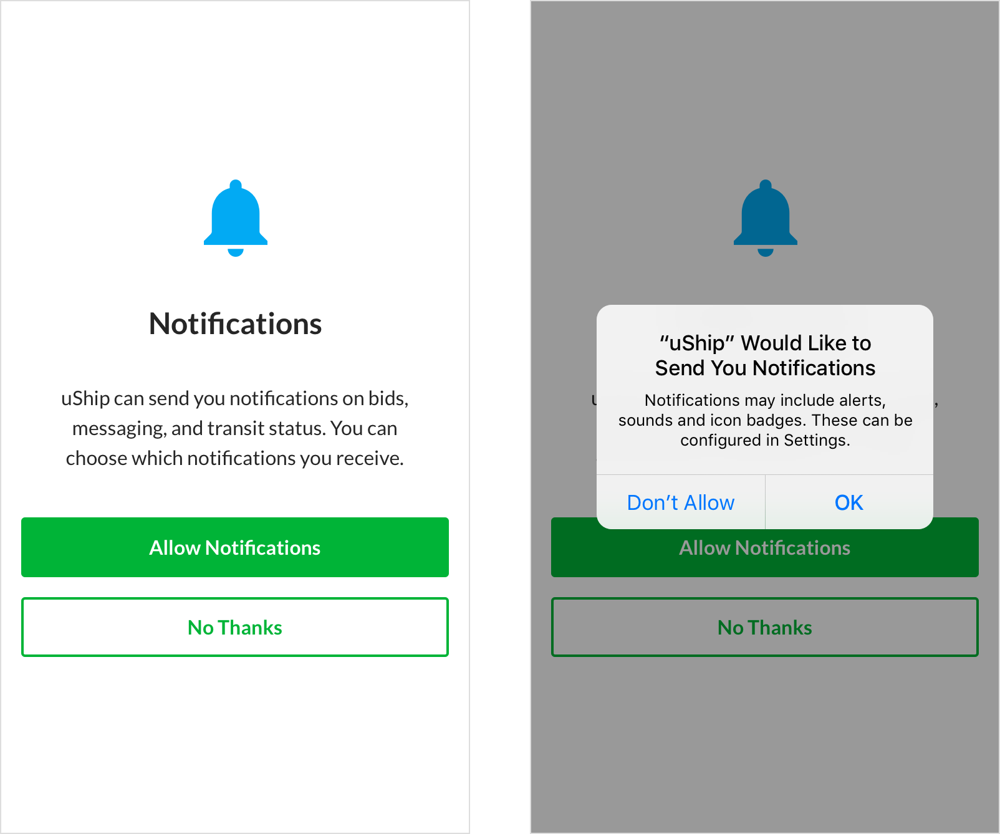
Drive4Schenker mobile app
In 2016, uShip signed a $25MM deal with one of the world's largest logistics companies, DB Schenker, to provide shipping technology. We created a mobile app for the Drive4Schenker drivers to keep track of their shipments digitally. This had previously been completed with pen and paper. With the app, drivers could view their daily schedule, mark transit statuses per shipment (picked up, delivered), and take photos of the shipments. This information could be immediately communicated to their dispatchers.
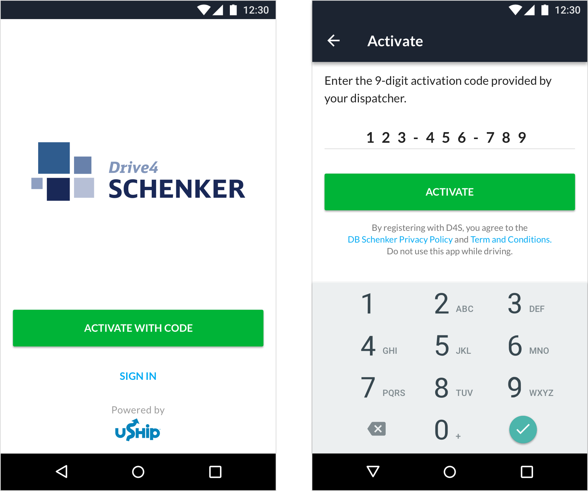
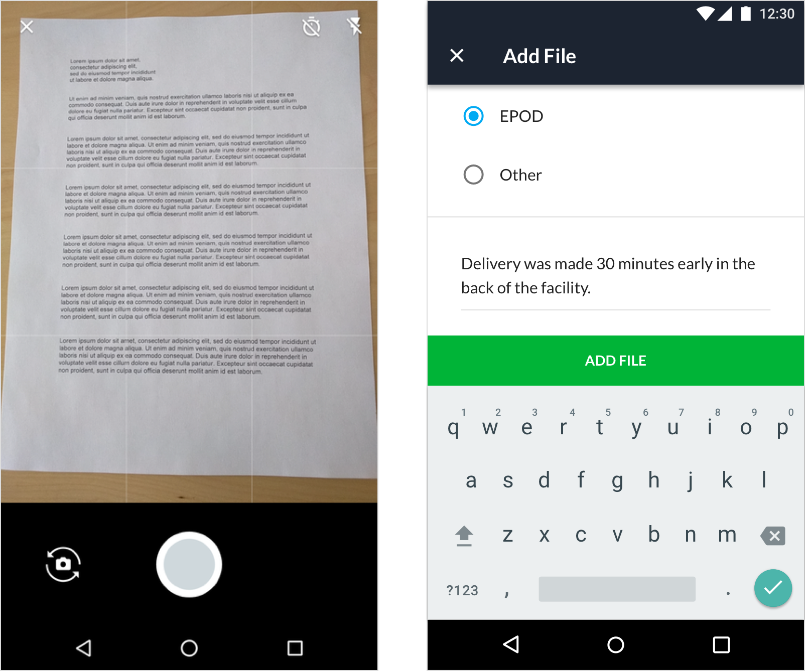
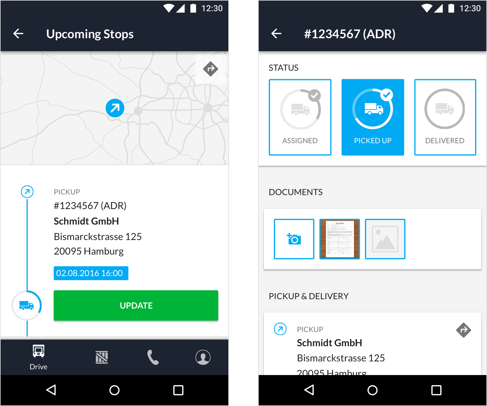